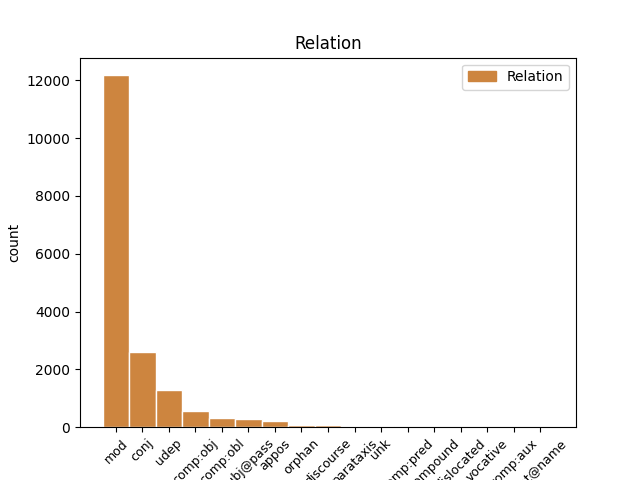
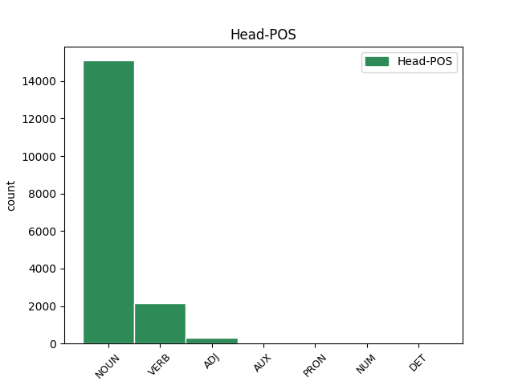
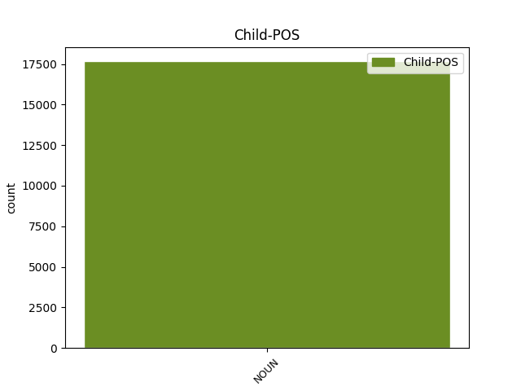

Distribution of features within this leaf



Agreement Rules sorted by frequency.
- When the dependent token is the modifer(mod) of the head token, and the head token is NOUN and the dependent token is NOUN.
1 No _ _ _ _ 0 _ _ _
2 arheoloģiskiem _ _ _ _ 0 _ _ _
3 izrakumiem _ _ _ _ 0 _ _ _
4 gan _ _ _ _ 0 _ _ _
5 redzams _ _ _ _ 0 _ _ _
6 , _ _ _ _ 0 _ _ _
7 ka _ _ _ _ 0 _ _ _
8 liela _ _ _ _ 0 _ _ _
9 dzimstība _ _ _ _ 0 _ _ _
10 neapstiprinās _ _ _ _ 0 _ _ _
11 ( _ _ _ _ 0 _ _ _
12 spriežot _ _ _ _ 0 _ _ _
13 pēc _ _ _ _ 0 _ _ _
14 māju _ _ _ _ 0 _ _ _
15 lieluma _ _ _ _ 0 _ _ _
16 ) _ _ _ _ 0 _ _ _
17 , _ _ _ _ 0 _ _ _
18 jo _ _ _ _ 0 _ _ _
19 liels _ _ _ _ 0 _ _ _
20 iedzīvotāju _ _ _ _ 0 _ _ _
21 skaita skaits NOUN ncmsg1 Case=Gen|Gender=Masc|Number=Sing 22 mod _ LvtbNodeId=a-z99-p67s5w21
22 pieaugums pieaugums NOUN ncmsn1 Case=Nom|Gender=Masc|Number=Sing 0 _ _ _
23 līdzinātos _ _ _ _ 0 _ _ _
24 Āzijas _ _ _ _ 0 _ _ _
25 dzimstības _ _ _ _ 0 _ _ _
26 sprādzienam _ _ _ _ 0 _ _ _
27 . _ _ _ _ 0 _ _ _
1 Svarīgākie _ _ _ _ 0 _ _ _
2 tikumi _ _ _ _ 0 _ _ _
3 , _ _ _ _ 0 _ _ _
4 ko _ _ _ _ 0 _ _ _
5 senās _ _ _ _ 0 _ _ _
6 Izraēlas _ _ _ _ 0 _ _ _
7 jauniešiem _ _ _ _ 0 _ _ _
8 vajadzēja _ _ _ _ 0 _ _ _
9 izkopt _ _ _ _ 0 _ _ _
10 , _ _ _ _ 0 _ _ _
11 bija _ _ _ _ 0 _ _ _
12 čaklums _ _ _ _ 0 _ _ _
13 , _ _ _ _ 0 _ _ _
14 godīgums _ _ _ _ 0 _ _ _
15 , _ _ _ _ 0 _ _ _
16 pazemība pazemība NOUN ncfsn4 Case=Nom|Gender=Fem|Number=Sing 0 _ _ _
17 , _ _ _ _ 0 _ _ _
18 kā _ _ _ _ 0 _ _ _
19 arī _ _ _ _ 0 _ _ _
20 dievbijība dievbijība NOUN ncfsn4 Case=Nom|Gender=Fem|Number=Sing 16 conj _ LvtbNodeId=a-z99-p160s1w20
21 ( _ _ _ _ 0 _ _ _
22 pēdējais _ _ _ _ 0 _ _ _
23 tika _ _ _ _ 0 _ _ _
24 uzskatīta _ _ _ _ 0 _ _ _
25 par _ _ _ _ 0 _ _ _
26 augstāko _ _ _ _ 0 _ _ _
27 vērtību _ _ _ _ 0 _ _ _
28 ) _ _ _ _ 0 _ _ _
29 . _ _ _ _ 0 _ _ _
1 Testēšanas _ _ _ _ 0 _ _ _
2 koordinators _ _ _ _ 0 _ _ _
3 izmanto _ _ _ _ 0 _ _ _
4 prasību _ _ _ _ 0 _ _ _
5 - _ _ _ _ 0 _ _ _
6 pārbaužu _ _ _ _ 0 _ _ _
7 kontroliera _ _ _ _ 0 _ _ _
8 sniegto _ _ _ _ 0 _ _ _
9 informāciju _ _ _ _ 0 _ _ _
10 tālākam _ _ _ _ 0 _ _ _
11 darbam _ _ _ _ 0 _ _ _
12 : _ _ _ _ 0 _ _ _
13 pēc _ _ _ _ 0 _ _ _
14 kārtas _ _ _ _ 0 _ _ _
15 atrod _ _ _ _ 0 _ _ _
16 visu _ _ _ _ 0 _ _ _
17 pārbaudes _ _ _ _ 0 _ _ _
18 moduļu modulis NOUN ncmpg2 Case=Gen|Gender=Masc|Number=Plur 19 udep _ LvtbNodeId=a-z98-p77s3w18
19 izpildāmos izpildīt VERB vmnpdmpappypn Case=Acc|Definite=Def|Degree=Pos|Gender=Masc|Number=Plur|Polarity=Pos|Tense=Pres|VerbForm=Part|Voice=Pass 0 _ _ _
20 failus _ _ _ _ 0 _ _ _
21 , _ _ _ _ 0 _ _ _
22 tos _ _ _ _ 0 _ _ _
23 ielādē _ _ _ _ 0 _ _ _
24 atmiņā _ _ _ _ 0 _ _ _
25 un _ _ _ _ 0 _ _ _
26 izpilda _ _ _ _ 0 _ _ _
27 pārbaudes _ _ _ _ 0 _ _ _
28 . _ _ _ _ 0 _ _ _
1 Postmodernisms _ _ _ _ 0 _ _ _
2 Latvijas _ _ _ _ 0 _ _ _
3 teātrī _ _ _ _ 0 _ _ _
4 no _ _ _ _ 0 _ _ _
5 estētiku estētika NOUN ncfsa4 Case=Acc|Gender=Fem|Number=Sing 6 comp:obj _ LvtbNodeId=a-z83-p93s8w5
6 atjaunojošas atjaunot VERB vmnpdfsgapnpn Aspect=Imp|Case=Gen|Definite=Ind|Degree=Pos|Gender=Fem|Number=Sing|Polarity=Pos|Tense=Pres|VerbForm=Part|Voice=Act 0 _ _ _
7 kustības _ _ _ _ 0 _ _ _
8 pakāpeniski _ _ _ _ 0 _ _ _
9 pārtop _ _ _ _ 0 _ _ _
10 modē _ _ _ _ 0 _ _ _
11 . _ _ _ _ 0 _ _ _
1 Savukārt _ _ _ _ 0 _ _ _
2 , _ _ _ _ 0 _ _ _
3 pieprasot _ _ _ _ 0 _ _ _
4 failu _ _ _ _ 0 _ _ _
5 sistēmas _ _ _ _ 0 _ _ _
6 aģentam _ _ _ _ 0 _ _ _
7 konstatēt _ _ _ _ 0 _ _ _
8 notikumu _ _ _ _ 0 _ _ _
9 " _ _ _ _ 0 _ _ _
10 fails fails NOUN ncmsn1 Case=Nom|Gender=Masc|Number=Sing 11 subj@pass _ LvtbNodeId=a-z98-p30s4w10
11 dzēsts dzēst VERB vmnpdmsnpsnpn Aspect=Perf|Case=Nom|Definite=Ind|Degree=Pos|Gender=Masc|Number=Sing|Polarity=Pos|Tense=Past|VerbForm=Part|Voice=Pass 0 _ _ _
12 " _ _ _ _ 0 _ _ _
13 , _ _ _ _ 0 _ _ _
14 tiek _ _ _ _ 0 _ _ _
15 padota _ _ _ _ 0 _ _ _
16 šī _ _ _ _ 0 _ _ _
17 mainīgā _ _ _ _ 0 _ _ _
18 vērtība _ _ _ _ 0 _ _ _
19 . _ _ _ _ 0 _ _ _
1 Iespējams _ _ _ _ 0 _ _ _
2 , _ _ _ _ 0 _ _ _
3 ka _ _ _ _ 0 _ _ _
4 pazemība _ _ _ _ 0 _ _ _
5 senajā _ _ _ _ 0 _ _ _
6 Izraēlā _ _ _ _ 0 _ _ _
7 tika _ _ _ _ 0 _ _ _
8 pārņemta _ _ _ _ 0 _ _ _
9 kā _ _ _ _ 0 _ _ _
10 ierēdņu _ _ _ _ 0 _ _ _
11 tikums _ _ _ _ 0 _ _ _
12 no _ _ _ _ 0 _ _ _
13 apkārtējām _ _ _ _ 0 _ _ _
14 kultūrām _ _ _ _ 0 _ _ _
15 , _ _ _ _ 0 _ _ _
16 kas _ _ _ _ 0 _ _ _
17 tika _ _ _ _ 0 _ _ _
18 piemērota piemērot VERB vmnpdfsnpsnpn Aspect=Perf|Case=Nom|Definite=Ind|Degree=Pos|Gender=Fem|Number=Sing|Polarity=Pos|Tense=Past|VerbForm=Part|Voice=Pass 0 _ _ _
19 Jahves _ _ _ _ 0 _ _ _
20 reliģijai reliģija NOUN ncfsd4 Case=Dat|Gender=Fem|Number=Sing 18 comp:obl _ LvtbNodeId=a-z99-p160s2w20
21 ( _ _ _ _ 0 _ _ _
22 Jahve _ _ _ _ 0 _ _ _
23 ienīst _ _ _ _ 0 _ _ _
24 visus _ _ _ _ 0 _ _ _
25 augstprātīgos _ _ _ _ 0 _ _ _
26 un _ _ _ _ 0 _ _ _
27 lepnos _ _ _ _ 0 _ _ _
28 ) _ _ _ _ 0 _ _ _
29 . _ _ _ _ 0 _ _ _
1 Interviju _ _ _ _ 0 _ _ _
2 vietas _ _ _ _ 0 _ _ _
3 izvēlē _ _ _ _ 0 _ _ _
4 būtiski _ _ _ _ 0 _ _ _
5 bija _ _ _ _ 0 _ _ _
6 sekojoši _ _ _ _ 0 _ _ _
7 kritēriji _ _ _ _ 0 _ _ _
8 : _ _ _ _ 0 _ _ _
9 1 _ _ _ _ 0 _ _ _
10 ) _ _ _ _ 0 _ _ _
11 iekļaut _ _ _ _ 0 _ _ _
12 rajonus _ _ _ _ 0 _ _ _
13 , _ _ _ _ 0 _ _ _
14 kas _ _ _ _ 0 _ _ _
15 atrodas _ _ _ _ 0 _ _ _
16 uz _ _ _ _ 0 _ _ _
17 robeņas _ _ _ _ 0 _ _ _
18 ar _ _ _ _ 0 _ _ _
19 tuvākajām _ _ _ _ 0 _ _ _
20 kaimiņvalstīm _ _ _ _ 0 _ _ _
21 ; _ _ _ _ 0 _ _ _
22 2 _ _ _ _ 0 _ _ _
23 ) _ _ _ _ 0 _ _ _
24 iekļaut _ _ _ _ 0 _ _ _
25 etniski _ _ _ _ 0 _ _ _
26 daudzveidīgākos _ _ _ _ 0 _ _ _
27 un _ _ _ _ 0 _ _ _
28 etniski _ _ _ _ 0 _ _ _
29 vienveidīgākos _ _ _ _ 0 _ _ _
30 rajonus _ _ _ _ 0 _ _ _
31 ; _ _ _ _ 0 _ _ _
32 3 _ _ _ _ 0 _ _ _
33 ) _ _ _ _ 0 _ _ _
34 lauka _ _ _ _ 0 _ _ _
35 pētījumiem pētījums NOUN ncmpd1 Case=Dat|Gender=Masc|Number=Plur 36 udep _ LvtbNodeId=a-z89-p27s3w35
36 nepieciešamā nepieciešams ADJ afmsgyp Case=Gen|Definite=Def|Degree=Pos|Gender=Masc|Number=Sing 0 _ _ _
37 finansējuma _ _ _ _ 0 _ _ _
38 esamība _ _ _ _ 0 _ _ _
39 / _ _ _ _ 0 _ _ _
40 neesamība _ _ _ _ 0 _ _ _
41 . _ _ _ _ 0 _ _ _
1 Lai _ _ _ _ 0 _ _ _
2 varētu _ _ _ _ 0 _ _ _
3 izsekot _ _ _ _ 0 _ _ _
4 verificējamā _ _ _ _ 0 _ _ _
5 procesa _ _ _ _ 0 _ _ _
6 instances _ _ _ _ 0 _ _ _
7 izpildei _ _ _ _ 0 _ _ _
8 , _ _ _ _ 0 _ _ _
9 katrs _ _ _ _ 0 _ _ _
10 no _ _ _ _ 0 _ _ _
11 notikumiem _ _ _ _ 0 _ _ _
12 satur _ _ _ _ 0 _ _ _
13 zināmus _ _ _ _ 0 _ _ _
14 to _ _ _ _ 0 _ _ _
15 identificējošus _ _ _ _ 0 _ _ _
16 parametrus parametrs NOUN ncmpa1 Case=Acc|Gender=Masc|Number=Plur 0 _ _ _
17 , _ _ _ _ 0 _ _ _
18 piemēram _ _ _ _ 0 _ _ _
19 , _ _ _ _ 0 _ _ _
20 faila _ _ _ _ 0 _ _ _
21 nosaukumu nosaukums NOUN ncmsa1 Case=Acc|Gender=Masc|Number=Sing 16 appos _ LvtbNodeId=a-z98-p27s3w21|SpaceAfter=No
22 , _ _ _ _ 0 _ _ _
23 kura _ _ _ _ 0 _ _ _
24 modificēšana _ _ _ _ 0 _ _ _
25 ir _ _ _ _ 0 _ _ _
26 jāpamana _ _ _ _ 0 _ _ _
27 , _ _ _ _ 0 _ _ _
28 vai _ _ _ _ 0 _ _ _
29 tabulas _ _ _ _ 0 _ _ _
30 ieraksta _ _ _ _ 0 _ _ _
31 identifikatoru _ _ _ _ 0 _ _ _
32 ieraksta _ _ _ _ 0 _ _ _
33 dzēšanas _ _ _ _ 0 _ _ _
34 gadījumā _ _ _ _ 0 _ _ _
35 . _ _ _ _ 0 _ _ _
1 Kultūras _ _ _ _ 0 _ _ _
2 vardarbība _ _ _ _ 0 _ _ _
3 ir _ _ _ _ 0 _ _ _
4 pārstāvēta _ _ _ _ 0 _ _ _
5 tajos _ _ _ _ 0 _ _ _
6 kultūras _ _ _ _ 0 _ _ _
7 aspektos _ _ _ _ 0 _ _ _
8 ( _ _ _ _ 0 _ _ _
9 mūsu _ _ _ _ 0 _ _ _
10 eksistences _ _ _ _ 0 _ _ _
11 simboliskajā _ _ _ _ 0 _ _ _
12 sfērā sfēra NOUN ncfsl4 Case=Loc|Gender=Fem|Number=Sing 14 udep _ LvtbNodeId=a-z99-p16s4w12|SpaceAfter=No
13 : _ _ _ _ 0 _ _ _
14 reliģija reliģija NOUN ncfsn4 Case=Nom|Gender=Fem|Number=Sing 0 _ _ _
15 , _ _ _ _ 0 _ _ _
16 ideoloģija _ _ _ _ 0 _ _ _
17 , _ _ _ _ 0 _ _ _
18 valoda _ _ _ _ 0 _ _ _
19 , _ _ _ _ 0 _ _ _
20 māksla _ _ _ _ 0 _ _ _
21 , _ _ _ _ 0 _ _ _
22 empīriskā _ _ _ _ 0 _ _ _
23 zinātne _ _ _ _ 0 _ _ _
24 , _ _ _ _ 0 _ _ _
25 formālā _ _ _ _ 0 _ _ _
26 zinātne _ _ _ _ 0 _ _ _
27 ) _ _ _ _ 0 _ _ _
28 , _ _ _ _ 0 _ _ _
29 kas _ _ _ _ 0 _ _ _
30 tiek _ _ _ _ 0 _ _ _
31 lietota _ _ _ _ 0 _ _ _
32 , _ _ _ _ 0 _ _ _
33 lai _ _ _ _ 0 _ _ _
34 attaisnotu _ _ _ _ 0 _ _ _
35 vai _ _ _ _ 0 _ _ _
36 leģitimētu _ _ _ _ 0 _ _ _
37 tiešo _ _ _ _ 0 _ _ _
38 vai _ _ _ _ 0 _ _ _
39 strukturālo _ _ _ _ 0 _ _ _
40 vardarbību _ _ _ _ 0 _ _ _
41 . _ _ _ _ 0 _ _ _
1 Nesen _ _ _ _ 0 _ _ _
2 veiktajā _ _ _ _ 0 _ _ _
3 pētījumā pētījums NOUN ncmsl1 Case=Loc|Gender=Masc|Number=Sing 0 _ _ _
4 par _ _ _ _ 0 _ _ _
5 reģistrētās _ _ _ _ 0 _ _ _
6 un _ _ _ _ 0 _ _ _
7 nereģistrētās _ _ _ _ 0 _ _ _
8 kopdzīves _ _ _ _ 0 _ _ _
9 faktoru _ _ _ _ 0 _ _ _
10 salīdzinošo _ _ _ _ 0 _ _ _
11 analīzi _ _ _ _ 0 _ _ _
12 [ _ _ _ _ 0 _ _ _
13 LU _ _ _ _ 0 _ _ _
14 Publiskās _ _ _ _ 0 _ _ _
15 antropoloģijas _ _ _ _ 0 _ _ _
16 centrs centrs NOUN ncmsn1 Case=Nom|Gender=Masc|Number=Sing 3 parataxis _ LvtbNodeId=a-z87-p129s2w16|SpaceAfter=No
17 , _ _ _ _ 0 _ _ _
18 2015 _ _ _ _ 0 _ _ _
19 ] _ _ _ _ 0 _ _ _
20 respondenti _ _ _ _ 0 _ _ _
21 lielākoties _ _ _ _ 0 _ _ _
22 uzskatījuši _ _ _ _ 0 _ _ _
23 , _ _ _ _ 0 _ _ _
24 ka _ _ _ _ 0 _ _ _
25 kopdzīve _ _ _ _ 0 _ _ _
26 un _ _ _ _ 0 _ _ _
27 attiecības _ _ _ _ 0 _ _ _
28 jebkurā _ _ _ _ 0 _ _ _
29 brīdī _ _ _ _ 0 _ _ _
30 var _ _ _ _ 0 _ _ _
31 pāraugt _ _ _ _ 0 _ _ _
32 laulībā _ _ _ _ 0 _ _ _
33 . _ _ _ _ 0 _ _ _
1 Salīdzinājumam salīdzinājums NOUN ncmsd1 Case=Dat|Gender=Masc|Number=Sing 8 orphan _ LvtbNodeId=a-z31-p109s4w1
2 A. _ _ _ _ 0 _ _ _
3 Upīša _ _ _ _ 0 _ _ _
4 romāna _ _ _ _ 0 _ _ _
5 „ _ _ _ _ 0 _ _ _
6 Sieviete _ _ _ _ 0 _ _ _
7 ” _ _ _ _ 0 _ _ _
8 fināls fināls NOUN ncmsn1 Case=Nom|Gender=Masc|Number=Sing 0 _ _ _
9 , _ _ _ _ 0 _ _ _
10 kur _ _ _ _ 0 _ _ _
11 Elza _ _ _ _ 0 _ _ _
12 pēdējā _ _ _ _ 0 _ _ _
13 brīdī _ _ _ _ 0 _ _ _
14 mēģina _ _ _ _ 0 _ _ _
15 noturēties _ _ _ _ 0 _ _ _
16 , _ _ _ _ 0 _ _ _
17 pēkšņi _ _ _ _ 0 _ _ _
18 sajūtot _ _ _ _ 0 _ _ _
19 dzīvības _ _ _ _ 0 _ _ _
20 instinktu _ _ _ _ 0 _ _ _
21 , _ _ _ _ 0 _ _ _
22 tomēr _ _ _ _ 0 _ _ _
23 nesekmīgi _ _ _ _ 0 _ _ _
24 . _ _ _ _ 0 _ _ _
1 Lai _ _ _ _ 0 _ _ _
2 varētu _ _ _ _ 0 _ _ _
3 izsekot _ _ _ _ 0 _ _ _
4 verificējamā _ _ _ _ 0 _ _ _
5 procesa _ _ _ _ 0 _ _ _
6 instances _ _ _ _ 0 _ _ _
7 izpildei _ _ _ _ 0 _ _ _
8 , _ _ _ _ 0 _ _ _
9 katrs _ _ _ _ 0 _ _ _
10 no _ _ _ _ 0 _ _ _
11 notikumiem _ _ _ _ 0 _ _ _
12 satur _ _ _ _ 0 _ _ _
13 zināmus _ _ _ _ 0 _ _ _
14 to _ _ _ _ 0 _ _ _
15 identificējošus _ _ _ _ 0 _ _ _
16 parametrus _ _ _ _ 0 _ _ _
17 , _ _ _ _ 0 _ _ _
18 piemēram piemērs NOUN ncmsd1 Case=Dat|Gender=Masc|Number=Sing 21 discourse _ LvtbNodeId=a-z98-p27s3w18|SpaceAfter=No
19 , _ _ _ _ 0 _ _ _
20 faila _ _ _ _ 0 _ _ _
21 nosaukumu nosaukums NOUN ncmsa1 Case=Acc|Gender=Masc|Number=Sing 0 _ _ _
22 , _ _ _ _ 0 _ _ _
23 kura _ _ _ _ 0 _ _ _
24 modificēšana _ _ _ _ 0 _ _ _
25 ir _ _ _ _ 0 _ _ _
26 jāpamana _ _ _ _ 0 _ _ _
27 , _ _ _ _ 0 _ _ _
28 vai _ _ _ _ 0 _ _ _
29 tabulas _ _ _ _ 0 _ _ _
30 ieraksta _ _ _ _ 0 _ _ _
31 identifikatoru _ _ _ _ 0 _ _ _
32 ieraksta _ _ _ _ 0 _ _ _
33 dzēšanas _ _ _ _ 0 _ _ _
34 gadījumā _ _ _ _ 0 _ _ _
35 . _ _ _ _ 0 _ _ _
1 Savukārt _ _ _ _ 0 _ _ _
2 , _ _ _ _ 0 _ _ _
3 pieprasot _ _ _ _ 0 _ _ _
4 failu _ _ _ _ 0 _ _ _
5 sistēmas _ _ _ _ 0 _ _ _
6 aģentam _ _ _ _ 0 _ _ _
7 konstatēt _ _ _ _ 0 _ _ _
8 notikumu notikums NOUN ncmsa1 Case=Acc|Gender=Masc|Number=Sing 11 mod _ LvtbNodeId=a-z98-p30s4w8
9 " _ _ _ _ 0 _ _ _
10 fails _ _ _ _ 0 _ _ _
11 dzēsts dzēst VERB vmnpdmsnpsnpn Aspect=Perf|Case=Nom|Definite=Ind|Degree=Pos|Gender=Masc|Number=Sing|Polarity=Pos|Tense=Past|VerbForm=Part|Voice=Pass 0 _ _ _
12 " _ _ _ _ 0 _ _ _
13 , _ _ _ _ 0 _ _ _
14 tiek _ _ _ _ 0 _ _ _
15 padota _ _ _ _ 0 _ _ _
16 šī _ _ _ _ 0 _ _ _
17 mainīgā _ _ _ _ 0 _ _ _
18 vērtība _ _ _ _ 0 _ _ _
19 . _ _ _ _ 0 _ _ _
1 Apzinos _ _ _ _ 0 _ _ _
2 , _ _ _ _ 0 _ _ _
3 ka _ _ _ _ 0 _ _ _
4 tas _ _ _ _ 0 _ _ _
5 ir _ _ _ _ 0 _ _ _
6 resursu resursi NOUN ncmdg1 Case=Gen|Gender=Masc|Number=Ptan 7 mod _ LvtbNodeId=a-z84-p58s3w6
7 ietilpīgs ietilpīgs ADJ afmsnnp Case=Nom|Definite=Ind|Degree=Pos|Gender=Masc|Number=Sing 0 _ _ _
8 darbs _ _ _ _ 0 _ _ _
9 , _ _ _ _ 0 _ _ _
10 bet _ _ _ _ 0 _ _ _
11 ja _ _ _ _ 0 _ _ _
12 no _ _ _ _ 0 _ _ _
13 atbildīgo _ _ _ _ 0 _ _ _
14 institūciju _ _ _ _ 0 _ _ _
15 puses _ _ _ _ 0 _ _ _
16 tiks _ _ _ _ 0 _ _ _
17 izrādīta _ _ _ _ 0 _ _ _
18 interese _ _ _ _ 0 _ _ _
19 , _ _ _ _ 0 _ _ _
20 tad _ _ _ _ 0 _ _ _
21 jau _ _ _ _ 0 _ _ _
22 izdosies _ _ _ _ 0 _ _ _
23 . _ _ _ _ 0 _ _ _
1 Sievietes _ _ _ _ 0 _ _ _
2 , _ _ _ _ 0 _ _ _
3 kā _ _ _ _ 0 _ _ _
4 to _ _ _ _ 0 _ _ _
5 atklāj _ _ _ _ 0 _ _ _
6 arī _ _ _ _ 0 _ _ _
7 Latvijas _ _ _ _ 0 _ _ _
8 statistika _ _ _ _ 0 _ _ _
9 , _ _ _ _ 0 _ _ _
10 pretstatā pretstats NOUN ncmsl1 Case=Loc|Gender=Masc|Number=Sing 0 _ _ _
11 vīriešiem vīrietis NOUN ncmpd2 Case=Dat|Gender=Masc|Number=Plur 10 comp:obl _ LvtbNodeId=a-z31-p109s2w11|SpaceAfter=No
12 , _ _ _ _ 0 _ _ _
13 kas _ _ _ _ 0 _ _ _
14 pamatā _ _ _ _ 0 _ _ _
15 noduras _ _ _ _ 0 _ _ _
16 , _ _ _ _ 0 _ _ _
17 nošaujas _ _ _ _ 0 _ _ _
18 un _ _ _ _ 0 _ _ _
19 pakaras _ _ _ _ 0 _ _ _
20 , _ _ _ _ 0 _ _ _
21 pārsvarā _ _ _ _ 0 _ _ _
22 izvēlas _ _ _ _ 0 _ _ _
23 nevardarbīgas _ _ _ _ 0 _ _ _
24 , _ _ _ _ 0 _ _ _
25 mazāk _ _ _ _ 0 _ _ _
26 bīstamas _ _ _ _ 0 _ _ _
27 metodes _ _ _ _ 0 _ _ _
28 : _ _ _ _ 0 _ _ _
29 iedzer _ _ _ _ 0 _ _ _
30 indi _ _ _ _ 0 _ _ _
31 , _ _ _ _ 0 _ _ _
32 indējas _ _ _ _ 0 _ _ _
33 ar _ _ _ _ 0 _ _ _
34 gāzi _ _ _ _ 0 _ _ _
35 , _ _ _ _ 0 _ _ _
36 slīcinās _ _ _ _ 0 _ _ _
37 . _ _ _ _ 0 _ _ _
1 Diemžēl _ _ _ _ 0 _ _ _
2 , _ _ _ _ 0 _ _ _
3 netiek _ _ _ _ 0 _ _ _
4 dokumentēts _ _ _ _ 0 _ _ _
5 loga _ _ _ _ 0 _ _ _
6 veids _ _ _ _ 0 _ _ _
7 , _ _ _ _ 0 _ _ _
8 neatšifrējot _ _ _ _ 0 _ _ _
9 , _ _ _ _ 0 _ _ _
10 vai _ _ _ _ 0 _ _ _
11 tas _ _ _ _ 0 _ _ _
12 bijis būt AUX vcnpdmsnasnpn Aspect=Perf|Case=Nom|Definite=Ind|Degree=Pos|Gender=Masc|Number=Sing|Polarity=Pos|Tense=Past|VerbForm=Part|Voice=Act 0 _ _ _
13 vitrāžas _ _ _ _ 0 _ _ _
14 logs logs NOUN ncmsn1 Case=Nom|Gender=Masc|Number=Sing 12 comp:pred _ LvtbNodeId=a-z48-p28s11w14|SpaceAfter=No
15 . _ _ _ _ 0 _ _ _
1 Kā _ _ _ _ 0 _ _ _
2 atzīst _ _ _ _ 0 _ _ _
3 vairāki _ _ _ _ 0 _ _ _
4 VD _ _ _ _ 0 _ _ _
5 teologi _ _ _ _ 0 _ _ _
6 , _ _ _ _ 0 _ _ _
7 VD _ _ _ _ 0 _ _ _
8 tekstiem _ _ _ _ 0 _ _ _
9 piemērotāka _ _ _ _ 0 _ _ _
10 ir _ _ _ _ 0 _ _ _
11 skandināvu _ _ _ _ 0 _ _ _
12 pētnieka _ _ _ _ 0 _ _ _
13 Johana _ _ _ _ 0 _ _ _
14 Galtunga _ _ _ _ 0 _ _ _
15 ( _ _ _ _ 0 _ _ _
16 Galtung _ _ _ _ 0 _ _ _
17 ) _ _ _ _ 0 _ _ _
18 piedāvātā _ _ _ _ 0 _ _ _
19 teorija _ _ _ _ 0 _ _ _
20 par _ _ _ _ 0 _ _ _
21 vardarbību _ _ _ _ 0 _ _ _
22 , _ _ _ _ 0 _ _ _
23 kurā _ _ _ _ 0 _ _ _
24 izšķir _ _ _ _ 0 _ _ _
25 tiešu _ _ _ _ 0 _ _ _
26 , _ _ _ _ 0 _ _ _
27 strukturālu strukturāls ADJ affsanp Case=Acc|Definite=Ind|Degree=Pos|Gender=Fem|Number=Sing 0 _ _ _
28 un _ _ _ _ 0 _ _ _
29 kultūras kultūra NOUN ncfsg4 Case=Gen|Gender=Fem|Number=Sing 27 conj _ LvtbNodeId=a-z99-p16s1w29
30 vardarbību _ _ _ _ 0 _ _ _
31 . _ _ _ _ 0 _ _ _
1 Ūdensaugu _ _ _ _ 0 _ _ _
2 attīstībai attīstība NOUN ncfsd4 Case=Dat|Gender=Fem|Number=Sing 3 comp:obl _ LvtbNodeId=a-z85-p63s1w2
3 nepieciešamas nepieciešams ADJ affpnnp Case=Nom|Definite=Ind|Degree=Pos|Gender=Fem|Number=Plur 0 _ _ _
4 dažādas _ _ _ _ 0 _ _ _
5 ķīmisko _ _ _ _ 0 _ _ _
6 elementu _ _ _ _ 0 _ _ _
7 formas _ _ _ _ 0 _ _ _
8 – _ _ _ _ 0 _ _ _
9 neorganiskais _ _ _ _ 0 _ _ _
10 ogleklis _ _ _ _ 0 _ _ _
11 , _ _ _ _ 0 _ _ _
12 nitrāti _ _ _ _ 0 _ _ _
13 , _ _ _ _ 0 _ _ _
14 fosfāti _ _ _ _ 0 _ _ _
15 un _ _ _ _ 0 _ _ _
16 kālijs _ _ _ _ 0 _ _ _
17 kopā _ _ _ _ 0 _ _ _
18 ar _ _ _ _ 0 _ _ _
19 citiem _ _ _ _ 0 _ _ _
20 ķīmiskajiem _ _ _ _ 0 _ _ _
21 savienojumiem _ _ _ _ 0 _ _ _
22 , _ _ _ _ 0 _ _ _
23 ko _ _ _ _ 0 _ _ _
24 tie _ _ _ _ 0 _ _ _
25 uzņem _ _ _ _ 0 _ _ _
26 gan _ _ _ _ 0 _ _ _
27 no _ _ _ _ 0 _ _ _
28 ūdens _ _ _ _ 0 _ _ _
29 , _ _ _ _ 0 _ _ _
30 gan _ _ _ _ 0 _ _ _
31 no _ _ _ _ 0 _ _ _
32 sedimentiem _ _ _ _ 0 _ _ _
33 ( _ _ _ _ 0 _ _ _
34 Barko _ _ _ _ 0 _ _ _
35 & _ _ _ _ 0 _ _ _
36 Smart _ _ _ _ 0 _ _ _
37 , _ _ _ _ 0 _ _ _
38 1981 _ _ _ _ 0 _ _ _
39 ; _ _ _ _ 0 _ _ _
40 Thiébaut _ _ _ _ 0 _ _ _
41 & _ _ _ _ 0 _ _ _
42 Muller _ _ _ _ 0 _ _ _
43 , _ _ _ _ 0 _ _ _
44 2003 _ _ _ _ 0 _ _ _
45 ) _ _ _ _ 0 _ _ _
46 . _ _ _ _ 0 _ _ _
1 Jaunais _ _ _ _ 0 _ _ _
2 Rīgas _ _ _ _ 0 _ _ _
3 teātris teātris NOUN ncmsn2 Case=Nom|Gender=Masc|Number=Sing 6 subj@pass _ LvtbNodeId=a-z83-p16s1w3
4 ārzemēs _ _ _ _ 0 _ _ _
5 nereti _ _ _ _ 0 _ _ _
6 ticis tikt AUX vtnpdmsnasnpn Aspect=Perf|Case=Nom|Definite=Ind|Degree=Pos|Gender=Masc|Number=Sing|Polarity=Pos|Tense=Past|VerbForm=Part|Voice=Act 0 _ _ _
7 uztverts _ _ _ _ 0 _ _ _
8 kā _ _ _ _ 0 _ _ _
9 viena _ _ _ _ 0 _ _ _
10 režisora _ _ _ _ 0 _ _ _
11 autorteātris _ _ _ _ 0 _ _ _
12 , _ _ _ _ 0 _ _ _
13 kļūdaini _ _ _ _ 0 _ _ _
14 uzsverot _ _ _ _ 0 _ _ _
15 , _ _ _ _ 0 _ _ _
16 ka _ _ _ _ 0 _ _ _
17 to _ _ _ _ 0 _ _ _
18 1997. _ _ _ _ 0 _ _ _
19 gadā _ _ _ _ 0 _ _ _
20 dibinājis _ _ _ _ 0 _ _ _
21 Alvis _ _ _ _ 0 _ _ _
22 Hermanis _ _ _ _ 0 _ _ _
23 . _ _ _ _ 0 _ _ _
1 Viņi _ _ _ _ 0 _ _ _
2 ir _ _ _ _ 0 _ _ _
3 bezķermeniski _ _ _ _ 0 _ _ _
4 , _ _ _ _ 0 _ _ _
5 ziniet _ _ _ _ 0 _ _ _
6 , _ _ _ _ 0 _ _ _
7 savā _ _ _ _ 0 _ _ _
8 ziņā ziņa NOUN ncfsl4 Case=Loc|Gender=Fem|Number=Sing 9 unk _ LvtbNodeId=a-s25-p10s13w8
9 burtiskā burtisks ADJ arfslnp Case=Loc|Definite=Ind|Degree=Pos|Gender=Fem|Number=Sing 0 _ _ _
10 nozīmē _ _ _ _ 0 _ _ _
11 . _ _ _ _ 0 _ _ _
1 Lembergs _ _ _ _ 0 _ _ _
2 atriebjas _ _ _ _ 0 _ _ _
3 Artim _ _ _ _ 0 _ _ _
4 Kamparam _ _ _ _ 0 _ _ _
5 par _ _ _ _ 0 _ _ _
6 raidījumu raidījums NOUN ncmsa1 Case=Acc|Gender=Masc|Number=Sing 7 mod _ LvtbNodeId=a-p5293-p1s1w6
7 Viens viens NUM mcsmsn Case=Nom|Gender=Masc|Number=Sing|NumType=Card 0 _ _ _
8 pret _ _ _ _ 0 _ _ _
9 vienu _ _ _ _ 0 _ _ _
10 . _ _ _ _ 0 _ _ _
1 Ziedonis _ _ _ _ 0 _ _ _
2 darba _ _ _ _ 0 _ _ _
3 gaitas _ _ _ _ 0 _ _ _
4 sācis sākt VERB vmnpdmsnasnpn Aspect=Perf|Case=Nom|Definite=Ind|Degree=Pos|Gender=Masc|Number=Sing|Polarity=Pos|Tense=Past|VerbForm=Part|Voice=Act 0 _ _ _
5 ceļa _ _ _ _ 0 _ _ _
6 strādnieks _ _ _ _ 0 _ _ _
7 , _ _ _ _ 0 _ _ _
8 skolotājs skolotājs NOUN ncmsn1 Case=Nom|Gender=Masc|Number=Sing 4 conj _ LvtbNodeId=a-p3736-p7s1w8
9 Olainē _ _ _ _ 0 _ _ _
10 un _ _ _ _ 0 _ _ _
11 Ķemeros _ _ _ _ 0 _ _ _
12 , _ _ _ _ 0 _ _ _
13 bijis _ _ _ _ 0 _ _ _
14 skolotājs _ _ _ _ 0 _ _ _
15 Jūrmalas _ _ _ _ 0 _ _ _
16 1. _ _ _ _ 0 _ _ _
17 vidusskolā _ _ _ _ 0 _ _ _
18 . _ _ _ _ 0 _ _ _
1 1987. _ _ _ _ 0 _ _ _
2 gadā _ _ _ _ 0 _ _ _
3 Ziedonis _ _ _ _ 0 _ _ _
4 kļuvis kļūt AUX vtnpdmsnasnpn Aspect=Perf|Case=Nom|Definite=Ind|Degree=Pos|Gender=Masc|Number=Sing|Polarity=Pos|Tense=Past|VerbForm=Part|Voice=Act 0 _ _ _
5 par _ _ _ _ 0 _ _ _
6 priekšsēdētāju _ _ _ _ 0 _ _ _
7 Latvijas _ _ _ _ 0 _ _ _
8 Kultūras _ _ _ _ 0 _ _ _
9 fondā fonds NOUN ncmsl1 Case=Loc|Gender=Masc|Number=Sing 4 udep _ LvtbNodeId=a-p3736-p11s1w9|SpaceAfter=No
10 , _ _ _ _ 0 _ _ _
11 bet _ _ _ _ 0 _ _ _
12 1990. _ _ _ _ 0 _ _ _
13 gadā _ _ _ _ 0 _ _ _
14 ievēlēts _ _ _ _ 0 _ _ _
15 par _ _ _ _ 0 _ _ _
16 Latvijas _ _ _ _ 0 _ _ _
17 Republikas _ _ _ _ 0 _ _ _
18 Augstākās _ _ _ _ 0 _ _ _
19 Padomes _ _ _ _ 0 _ _ _
20 ( _ _ _ _ 0 _ _ _
21 AP _ _ _ _ 0 _ _ _
22 ) _ _ _ _ 0 _ _ _
23 deputātu _ _ _ _ 0 _ _ _
24 kā _ _ _ _ 0 _ _ _
25 neatkarīgais _ _ _ _ 0 _ _ _
26 kandidāts _ _ _ _ 0 _ _ _
27 180. _ _ _ _ 0 _ _ _
28 Stučkas _ _ _ _ 0 _ _ _
29 vēlēšanu _ _ _ _ 0 _ _ _
30 apgabalā _ _ _ _ 0 _ _ _
31 . _ _ _ _ 0 _ _ _
1 No _ _ _ _ 0 _ _ _
2 otras _ _ _ _ 0 _ _ _
3 puses _ _ _ _ 0 _ _ _
4 , _ _ _ _ 0 _ _ _
5 ņemot _ _ _ _ 0 _ _ _
6 vērā _ _ _ _ 0 _ _ _
7 izglītības _ _ _ _ 0 _ _ _
8 darbinieku _ _ _ _ 0 _ _ _
9 un _ _ _ _ 0 _ _ _
10 sabiedriskās _ _ _ _ 0 _ _ _
11 domas _ _ _ _ 0 _ _ _
12 kopumā _ _ _ _ 0 _ _ _
13 spiedienu _ _ _ _ 0 _ _ _
14 uz _ _ _ _ 0 _ _ _
15 izglītības _ _ _ _ 0 _ _ _
16 politikas _ _ _ _ 0 _ _ _
17 veidotājiem _ _ _ _ 0 _ _ _
18 , _ _ _ _ 0 _ _ _
19 nav _ _ _ _ 0 _ _ _
20 pamats _ _ _ _ 0 _ _ _
21 domāt _ _ _ _ 0 _ _ _
22 , _ _ _ _ 0 _ _ _
23 ka _ _ _ _ 0 _ _ _
24 skolēnu skolēns NOUN ncmpg1 Case=Gen|Gender=Masc|Number=Plur 0 _ _ _
25 pedagoģisko _ _ _ _ 0 _ _ _
26 darbinieku darbinieks NOUN ncmpg1 Case=Gen|Gender=Masc|Number=Plur 24 compound _ LvtbNodeId=a-z46-p21s6w26
27 attiecība _ _ _ _ 0 _ _ _
28 Latvijā _ _ _ _ 0 _ _ _
29 turpmākajos _ _ _ _ 0 _ _ _
30 gados _ _ _ _ 0 _ _ _
31 varētu _ _ _ _ 0 _ _ _
32 strauji _ _ _ _ 0 _ _ _
33 augt _ _ _ _ 0 _ _ _
34 . _ _ _ _ 0 _ _ _
1 Kur _ _ _ _ 0 _ _ _
2 gan _ _ _ _ 0 _ _ _
3 citur _ _ _ _ 0 _ _ _
4 vēl _ _ _ _ 0 _ _ _
5 viņus viņš PRON pp3mpan Case=Acc|Gender=Masc|Number=Plur|Person=3|PronType=Prs 0 _ _ _
6 , _ _ _ _ 0 _ _ _
7 bezdarbniekus bezdarbnieks NOUN ncmpa1 Case=Acc|Gender=Masc|Number=Plur 5 appos _ LvtbNodeId=a-p608-p20s3w7|SpaceAfter=No
8 , _ _ _ _ 0 _ _ _
9 paēdinās _ _ _ _ 0 _ _ _
10 , _ _ _ _ 0 _ _ _
11 dos _ _ _ _ 0 _ _ _
12 iespēju _ _ _ _ 0 _ _ _
13 nomazgāties _ _ _ _ 0 _ _ _
14 , _ _ _ _ 0 _ _ _
15 apģērbties _ _ _ _ 0 _ _ _
16 , _ _ _ _ 0 _ _ _
17 atbalstīs _ _ _ _ 0 _ _ _
18 ar _ _ _ _ 0 _ _ _
19 Dieva _ _ _ _ 0 _ _ _
20 vārdu _ _ _ _ 0 _ _ _
21 . _ _ _ _ 0 _ _ _
1 Kaut _ _ _ _ 0 _ _ _
2 tev _ _ _ _ 0 _ _ _
3 vairs _ _ _ _ 0 _ _ _
4 nekad _ _ _ _ 0 _ _ _
5 nebūtu _ _ _ _ 0 _ _ _
6 bērnu _ _ _ _ 0 _ _ _
7 un _ _ _ _ 0 _ _ _
8 visām visa PRON pg0fpdn Case=Dat|Gender=Fem|Number=Plur|PronType=Tot 0 _ _ _
9 citām _ _ _ _ 0 _ _ _
10 tavā _ _ _ _ 0 _ _ _
11 sugā suga NOUN ncfsl4 Case=Loc|Gender=Fem|Number=Sing 8 mod _ LvtbNodeId=a-p5341-p3s18w11
12 arī _ _ _ _ 0 _ _ _
13 ! _ _ _ _ 0 _ _ _
1 - _ _ _ _ 0 _ _ _
2 Es _ _ _ _ 0 _ _ _
3 neatbildēju _ _ _ _ 0 _ _ _
4 tāpēc _ _ _ _ 0 _ _ _
5 , _ _ _ _ 0 _ _ _
6 ka _ _ _ _ 0 _ _ _
7 tas _ _ _ _ 0 _ _ _
8 policists _ _ _ _ 0 _ _ _
9 , _ _ _ _ 0 _ _ _
10 kurš _ _ _ _ 0 _ _ _
11 mani _ _ _ _ 0 _ _ _
12 izjautāja _ _ _ _ 0 _ _ _
13 , _ _ _ _ 0 _ _ _
14 uzvedās _ _ _ _ 0 _ _ _
15 tā _ _ _ _ 0 _ _ _
16 , _ _ _ _ 0 _ _ _
17 it _ _ _ _ 0 _ _ _
18 kā _ _ _ _ 0 _ _ _
19 es _ _ _ _ 0 _ _ _
20 būtu _ _ _ _ 0 _ _ _
21 sabraukusi _ _ _ _ 0 _ _ _
22 viņu viņš PRON pp3msan Case=Acc|Gender=Masc|Number=Sing|Person=3|PronType=Prs 0 _ _ _
23 , _ _ _ _ 0 _ _ _
24 nevis _ _ _ _ 0 _ _ _
25 to _ _ _ _ 0 _ _ _
26 vīrieti vīrietis NOUN ncmsa2 Case=Acc|Gender=Masc|Number=Sing 22 conj _ LvtbNodeId=a-p8230-p2s12w26|SpaceAfter=No
27 . _ _ _ _ 0 _ _ _
1 25. _ _ _ _ 0 _ _ _
2 jūlijā _ _ _ _ 0 _ _ _
3 pēc _ _ _ _ 0 _ _ _
4 septiņiem septiņi NUM mcsmpd Case=Dat|Gender=Masc|Number=Plur|NumType=Card 0 _ _ _
5 vakarā vakars NOUN ncmsl1 Case=Loc|Gender=Masc|Number=Sing 4 unk _ LvtbNodeId=a-p9395-p1s1w5
6 Nīcas _ _ _ _ 0 _ _ _
7 novadā _ _ _ _ 0 _ _ _
8 , _ _ _ _ 0 _ _ _
9 Nīcas _ _ _ _ 0 _ _ _
10 pagastā _ _ _ _ 0 _ _ _
11 , _ _ _ _ 0 _ _ _
12 uz _ _ _ _ 0 _ _ _
13 vietējās _ _ _ _ 0 _ _ _
14 nozīmes _ _ _ _ 0 _ _ _
15 ceļa _ _ _ _ 0 _ _ _
16 , _ _ _ _ 0 _ _ _
17 kas _ _ _ _ 0 _ _ _
18 ved _ _ _ _ 0 _ _ _
19 uz _ _ _ _ 0 _ _ _
20 jūru _ _ _ _ 0 _ _ _
21 , _ _ _ _ 0 _ _ _
22 kāda _ _ _ _ 0 _ _ _
23 sieviete _ _ _ _ 0 _ _ _
24 konstatēja _ _ _ _ 0 _ _ _
25 , _ _ _ _ 0 _ _ _
26 ka _ _ _ _ 0 _ _ _
27 automašīnai _ _ _ _ 0 _ _ _
28 " _ _ _ _ 0 _ _ _
29 Volvo _ _ _ _ 0 _ _ _
30 " _ _ _ _ 0 _ _ _
31 ir _ _ _ _ 0 _ _ _
32 izsists _ _ _ _ 0 _ _ _
33 durvju _ _ _ _ 0 _ _ _
34 stikls _ _ _ _ 0 _ _ _
35 un _ _ _ _ 0 _ _ _
36 no _ _ _ _ 0 _ _ _
37 salona _ _ _ _ 0 _ _ _
38 nozagta _ _ _ _ 0 _ _ _
39 sieviešu _ _ _ _ 0 _ _ _
40 somiņa _ _ _ _ 0 _ _ _
41 ar _ _ _ _ 0 _ _ _
42 personīgām _ _ _ _ 0 _ _ _
43 mantām _ _ _ _ 0 _ _ _
44 , _ _ _ _ 0 _ _ _
45 informē _ _ _ _ 0 _ _ _
46 Valsts _ _ _ _ 0 _ _ _
47 policija _ _ _ _ 0 _ _ _
48 . _ _ _ _ 0 _ _ _
1 Piemēram piemērs NOUN ncmsd1 Case=Dat|Gender=Masc|Number=Sing 10 discourse _ LvtbNodeId=a-z106-p177s4w1|SpaceAfter=No
2 , _ _ _ _ 0 _ _ _
3 Pilsonības _ _ _ _ 0 _ _ _
4 un _ _ _ _ 0 _ _ _
5 imigrācijas _ _ _ _ 0 _ _ _
6 departamenta _ _ _ _ 0 _ _ _
7 preses _ _ _ _ 0 _ _ _
8 sekretārs _ _ _ _ 0 _ _ _
9 nesen _ _ _ _ 0 _ _ _
10 apgalvojis apgalvot VERB vmnpdmsnasnpn Aspect=Perf|Case=Nom|Definite=Ind|Degree=Pos|Gender=Masc|Number=Sing|Polarity=Pos|Tense=Past|VerbForm=Part|Voice=Act 0 _ _ _
11 , _ _ _ _ 0 _ _ _
12 ka _ _ _ _ 0 _ _ _
13 „ _ _ _ _ 0 _ _ _
14 PID _ _ _ _ 0 _ _ _
15 visu _ _ _ _ 0 _ _ _
16 laiku _ _ _ _ 0 _ _ _
17 atgādina _ _ _ _ 0 _ _ _
18 un _ _ _ _ 0 _ _ _
19 uzsver _ _ _ _ 0 _ _ _
20 , _ _ _ _ 0 _ _ _
21 ka _ _ _ _ 0 _ _ _
22 visiem _ _ _ _ 0 _ _ _
23 šiem _ _ _ _ 0 _ _ _
24 700 000 _ _ _ _ 0 _ _ _
25 iedzīvotāju _ _ _ _ 0 _ _ _
26 agri _ _ _ _ 0 _ _ _
27 vai _ _ _ _ 0 _ _ _
28 vēlu _ _ _ _ 0 _ _ _
29 būs _ _ _ _ 0 _ _ _
30 jābrauc _ _ _ _ 0 _ _ _
31 projām _ _ _ _ 0 _ _ _
32 no _ _ _ _ 0 _ _ _
33 Latvijas _ _ _ _ 0 _ _ _
34 ” _ _ _ _ 0 _ _ _
35 . _ _ _ _ 0 _ _ _
1 Atpazīstamības _ _ _ _ 0 _ _ _
2 zīmes _ _ _ _ 0 _ _ _
3 atklāšana _ _ _ _ 0 _ _ _
4 tiek _ _ _ _ 0 _ _ _
5 rīkota _ _ _ _ 0 _ _ _
6 UNESCO _ _ _ _ 0 _ _ _
7 nedēļas _ _ _ _ 0 _ _ _
8 ietvaros _ _ _ _ 0 _ _ _
9 , _ _ _ _ 0 _ _ _
10 kuras _ _ _ _ 0 _ _ _
11 laikā laiks NOUN ncmsl1 Case=Loc|Gender=Masc|Number=Sing 0 _ _ _
12 no _ _ _ _ 0 _ _ _
13 šī _ _ _ _ 0 _ _ _
14 gada _ _ _ _ 0 _ _ _
15 15. _ _ _ _ 0 _ _ _
16 - _ _ _ _ 0 _ _ _
17 19. _ _ _ _ 0 _ _ _
18 oktobrim oktobris NOUN ncmsd2 Case=Dat|Gender=Masc|Number=Sing 11 unk _ LvtbNodeId=a-p3772-p7s1w18
19 īpaši _ _ _ _ 0 _ _ _
20 tiek _ _ _ _ 0 _ _ _
21 izcelta _ _ _ _ 0 _ _ _
22 programma _ _ _ _ 0 _ _ _
23 " _ _ _ _ 0 _ _ _
24 Pasaules _ _ _ _ 0 _ _ _
25 atmiņa _ _ _ _ 0 _ _ _
26 " _ _ _ _ 0 _ _ _
27 un _ _ _ _ 0 _ _ _
28 tās _ _ _ _ 0 _ _ _
29 20. _ _ _ _ 0 _ _ _
30 gadadiena _ _ _ _ 0 _ _ _
31 . _ _ _ _ 0 _ _ _
1 Iespējama _ _ _ _ 0 _ _ _
2 arī _ _ _ _ 0 _ _ _
3 tādu _ _ _ _ 0 _ _ _
4 gadījumu _ _ _ _ 0 _ _ _
5 marķēšana _ _ _ _ 0 _ _ _
6 , _ _ _ _ 0 _ _ _
7 kad _ _ _ _ 0 _ _ _
8 teksta _ _ _ _ 0 _ _ _
9 autors _ _ _ _ 0 _ _ _
10 uzsver _ _ _ _ 0 _ _ _
11 , _ _ _ _ 0 _ _ _
12 ka _ _ _ _ 0 _ _ _
13 ir _ _ _ _ 0 _ _ _
14 bijis būt AUX vcnpdmsnasnpn Aspect=Perf|Case=Nom|Definite=Ind|Degree=Pos|Gender=Masc|Number=Sing|Polarity=Pos|Tense=Past|VerbForm=Part|Voice=Act 0 _ _ _
15 aprakstītās _ _ _ _ 0 _ _ _
16 situācijas _ _ _ _ 0 _ _ _
17 liecinieks liecinieks NOUN ncmsn1 Case=Nom|Gender=Masc|Number=Sing 14 comp:aux _ LvtbNodeId=a-z82-p31s7w17|SpaceAfter=No
18 . _ _ _ _ 0 _ _ _
1 Labāk _ _ _ _ 0 _ _ _
2 te _ _ _ _ 0 _ _ _
3 , _ _ _ _ 0 _ _ _
4 pie _ _ _ _ 0 _ _ _
5 cilvēkiem _ _ _ _ 0 _ _ _
6 , _ _ _ _ 0 _ _ _
7 kaut _ _ _ _ 0 _ _ _
8 arī _ _ _ _ 0 _ _ _
9 ziemā ziema NOUN ncfsl4 Case=Loc|Gender=Fem|Number=Sing 10 udep _ LvtbNodeId=a-d198-p205s1w9
10 vienai viens NUM mcsfsd Case=Dat|Gender=Fem|Number=Sing|NumType=Card 0 _ _ _
11 starp _ _ _ _ 0 _ _ _
12 apsnigušām _ _ _ _ 0 _ _ _
13 eglēm _ _ _ _ 0 _ _ _
14 . _ _ _ _ 0 _ _ _
1 Jautājums jautājums NOUN ncmsn1 Case=Nom|Gender=Masc|Number=Sing 10 dislocated _ LvtbNodeId=a-p3762-p32s2w1
2 par _ _ _ _ 0 _ _ _
3 to _ _ _ _ 0 _ _ _
4 , _ _ _ _ 0 _ _ _
5 kad _ _ _ _ 0 _ _ _
6 būs _ _ _ _ 0 _ _ _
7 ēkas _ _ _ _ 0 _ _ _
8 atklāšana _ _ _ _ 0 _ _ _
9 , _ _ _ _ 0 _ _ _
10 tas tas PRON pd3msnn Case=Nom|Gender=Masc|Number=Sing|Person=3|PronType=Dem 0 _ _ _
11 jau _ _ _ _ 0 _ _ _
12 vairāk _ _ _ _ 0 _ _ _
13 ir _ _ _ _ 0 _ _ _
14 politiķu _ _ _ _ 0 _ _ _
15 jautājums _ _ _ _ 0 _ _ _
16 . _ _ _ _ 0 _ _ _
1 Deputāte _ _ _ _ 0 _ _ _
2 savā _ _ _ _ 0 _ _ _
3 " _ _ _ _ 0 _ _ _
4 Twitter _ _ _ _ 0 _ _ _
5 " _ _ _ _ 0 _ _ _
6 kontā _ _ _ _ 0 _ _ _
7 norāda _ _ _ _ 0 _ _ _
8 , _ _ _ _ 0 _ _ _
9 ka _ _ _ _ 0 _ _ _
10 aizliegums _ _ _ _ 0 _ _ _
11 attiektos _ _ _ _ 0 _ _ _
12 arī _ _ _ _ 0 _ _ _
13 uz _ _ _ _ 0 _ _ _
14 " _ _ _ _ 0 _ _ _
15 Papardes _ _ _ _ 0 _ _ _
16 zieda zieds NOUN ncmsg1 Case=Gen|Gender=Masc|Number=Sing 18 unk _ LvtbNodeId=a-p18399-p6s1w16|SpaceAfter=No
17 " _ _ _ _ 0 _ _ _
18 izplatītajiem izplatīt VERB vmnpdmpdpsypn Aspect=Perf|Case=Dat|Definite=Def|Degree=Pos|Gender=Masc|Number=Plur|Polarity=Pos|Tense=Past|VerbForm=Part|Voice=Pass 0 _ _ _
19 materiāliem _ _ _ _ 0 _ _ _
20 . _ _ _ _ 0 _ _ _
1 Viņš _ _ _ _ 0 _ _ _
2 tādos _ _ _ _ 0 _ _ _
3 vakaros _ _ _ _ 0 _ _ _
4 gaidīja _ _ _ _ 0 _ _ _
5 mani _ _ _ _ 0 _ _ _
6 uz _ _ _ _ 0 _ _ _
7 mūsu _ _ _ _ 0 _ _ _
8 ielas _ _ _ _ 0 _ _ _
9 stūra _ _ _ _ 0 _ _ _
10 , _ _ _ _ 0 _ _ _
11 sēdēja _ _ _ _ 0 _ _ _
12 , _ _ _ _ 0 _ _ _
13 savas _ _ _ _ 0 _ _ _
14 mašīnas _ _ _ _ 0 _ _ _
15 siltajā _ _ _ _ 0 _ _ _
16 , _ _ _ _ 0 _ _ _
17 smacīgajā _ _ _ _ 0 _ _ _
18 tumsā _ _ _ _ 0 _ _ _
19 paslēpies _ _ _ _ 0 _ _ _
20 , _ _ _ _ 0 _ _ _
21 ugunis _ _ _ _ 0 _ _ _
22 izslēdzis _ _ _ _ 0 _ _ _
23 , _ _ _ _ 0 _ _ _
24 smēķēja _ _ _ _ 0 _ _ _
25 , _ _ _ _ 0 _ _ _
26 domāja _ _ _ _ 0 _ _ _
27 , _ _ _ _ 0 _ _ _
28 gaidīja _ _ _ _ 0 _ _ _
29 ; _ _ _ _ 0 _ _ _
30 es _ _ _ _ 0 _ _ _
31 nācu _ _ _ _ 0 _ _ _
32 steidzīgiem _ _ _ _ 0 _ _ _
33 soļiem _ _ _ _ 0 _ _ _
34 , _ _ _ _ 0 _ _ _
35 nosalušās _ _ _ _ 0 _ _ _
36 rokas _ _ _ _ 0 _ _ _
37 dziļi _ _ _ _ 0 _ _ _
38 mēteļa _ _ _ _ 0 _ _ _
39 kabatās _ _ _ _ 0 _ _ _
40 , _ _ _ _ 0 _ _ _
41 zodu _ _ _ _ 0 _ _ _
42 paslēpusi _ _ _ _ 0 _ _ _
43 pūkainajā _ _ _ _ 0 _ _ _
44 mākslīgas _ _ _ _ 0 _ _ _
45 zvērādas _ _ _ _ 0 _ _ _
46 apkaklē _ _ _ _ 0 _ _ _
47 , _ _ _ _ 0 _ _ _
48 katrā _ _ _ _ 0 _ _ _
49 solī _ _ _ _ 0 _ _ _
50 un _ _ _ _ 0 _ _ _
51 sirdspukstā _ _ _ _ 0 _ _ _
52 apzinādamās _ _ _ _ 0 _ _ _
53 , _ _ _ _ 0 _ _ _
54 ka _ _ _ _ 0 _ _ _
55 viņš _ _ _ _ 0 _ _ _
56 mani _ _ _ _ 0 _ _ _
57 redz _ _ _ _ 0 _ _ _
58 , _ _ _ _ 0 _ _ _
59 mani _ _ _ _ 0 _ _ _
60 vēro _ _ _ _ 0 _ _ _
61 , _ _ _ _ 0 _ _ _
62 smēķē _ _ _ _ 0 _ _ _
63 , _ _ _ _ 0 _ _ _
64 gaida _ _ _ _ 0 _ _ _
65 , _ _ _ _ 0 _ _ _
66 kaut _ _ _ _ 0 _ _ _
67 ko _ _ _ _ 0 _ _ _
68 domā _ _ _ _ 0 _ _ _
69 , _ _ _ _ 0 _ _ _
70 gaida _ _ _ _ 0 _ _ _
71 ; _ _ _ _ 0 _ _ _
72 es _ _ _ _ 0 _ _ _
73 esmu _ _ _ _ 0 _ _ _
74 neveikla _ _ _ _ 0 _ _ _
75 , _ _ _ _ 0 _ _ _
76 es _ _ _ _ 0 _ _ _
77 vienmēr _ _ _ _ 0 _ _ _
78 esmu _ _ _ _ 0 _ _ _
79 jutusies _ _ _ _ 0 _ _ _
80 neveikla _ _ _ _ 0 _ _ _
81 , _ _ _ _ 0 _ _ _
82 mazliet _ _ _ _ 0 _ _ _
83 par _ _ _ _ 0 _ _ _
84 garu _ _ _ _ 0 _ _ _
85 , _ _ _ _ 0 _ _ _
86 mazliet _ _ _ _ 0 _ _ _
87 par _ _ _ _ 0 _ _ _
88 platu _ _ _ _ 0 _ _ _
89 , _ _ _ _ 0 _ _ _
90 man _ _ _ _ 0 _ _ _
91 trūkst _ _ _ _ 0 _ _ _
92 līdzsvara _ _ _ _ 0 _ _ _
93 sajūtas _ _ _ _ 0 _ _ _
94 , _ _ _ _ 0 _ _ _
95 un _ _ _ _ 0 _ _ _
96 melno _ _ _ _ 0 _ _ _
97 pēdu _ _ _ _ 0 _ _ _
98 raksts _ _ _ _ 0 _ _ _
99 uz _ _ _ _ 0 _ _ _
100 baltā _ _ _ _ 0 _ _ _
101 trotuāra _ _ _ _ 0 _ _ _
102 celiņa _ _ _ _ 0 _ _ _
103 aiz _ _ _ _ 0 _ _ _
104 manis _ _ _ _ 0 _ _ _
105 stiepjas _ _ _ _ 0 _ _ _
106 drusku _ _ _ _ 0 _ _ _
107 juceklīgs _ _ _ _ 0 _ _ _
108 , _ _ _ _ 0 _ _ _
109 pie _ _ _ _ 0 _ _ _
110 mašīnas _ _ _ _ 0 _ _ _
111 durtiņām _ _ _ _ 0 _ _ _
112 tas _ _ _ _ 0 _ _ _
113 aprausies _ _ _ _ 0 _ _ _
114 pēkšņi _ _ _ _ 0 _ _ _
115 , _ _ _ _ 0 _ _ _
116 bet _ _ _ _ 0 _ _ _
117 tik _ _ _ _ 0 _ _ _
118 un _ _ _ _ 0 _ _ _
119 tā _ _ _ _ 0 _ _ _
120 pēc _ _ _ _ 0 _ _ _
121 pārdesmit _ _ _ _ 0 _ _ _
122 minūtēm _ _ _ _ 0 _ _ _
123 viss _ _ _ _ 0 _ _ _
124 jau _ _ _ _ 0 _ _ _
125 atkal _ _ _ _ 0 _ _ _
126 būs _ _ _ _ 0 _ _ _
127 balts _ _ _ _ 0 _ _ _
128 vai _ _ _ _ 0 _ _ _
129 arī _ _ _ _ 0 _ _ _
130 citas _ _ _ _ 0 _ _ _
131 pēdas _ _ _ _ 0 _ _ _
132 nojauks _ _ _ _ 0 _ _ _
133 manējo _ _ _ _ 0 _ _ _
134 rakstu _ _ _ _ 0 _ _ _
135 ; _ _ _ _ 0 _ _ _
136 viņš _ _ _ _ 0 _ _ _
137 atver _ _ _ _ 0 _ _ _
138 durtiņas _ _ _ _ 0 _ _ _
139 , _ _ _ _ 0 _ _ _
140 kad _ _ _ _ 0 _ _ _
141 esmu _ _ _ _ 0 _ _ _
142 dažus _ _ _ _ 0 _ _ _
143 soļus _ _ _ _ 0 _ _ _
144 no _ _ _ _ 0 _ _ _
145 mašīnas _ _ _ _ 0 _ _ _
146 , _ _ _ _ 0 _ _ _
147 pārliecas _ _ _ _ 0 _ _ _
148 pāri _ _ _ _ 0 _ _ _
149 pasažieru _ _ _ _ 0 _ _ _
150 sēdeklim _ _ _ _ 0 _ _ _
151 , _ _ _ _ 0 _ _ _
152 - _ _ _ _ 0 _ _ _
153 klikt _ _ _ _ 0 _ _ _
154 - _ _ _ _ 0 _ _ _
155 tās _ _ _ _ 0 _ _ _
156 ir _ _ _ _ 0 _ _ _
157 vaļā _ _ _ _ 0 _ _ _
158 tieši _ _ _ _ 0 _ _ _
159 tai _ _ _ _ 0 _ _ _
160 mirklī _ _ _ _ 0 _ _ _
161 , _ _ _ _ 0 _ _ _
162 kad _ _ _ _ 0 _ _ _
163 es _ _ _ _ 0 _ _ _
164 esmu _ _ _ _ 0 _ _ _
165 klāt _ _ _ _ 0 _ _ _
166 , _ _ _ _ 0 _ _ _
167 es _ _ _ _ 0 _ _ _
168 iesēžos _ _ _ _ 0 _ _ _
169 žigli _ _ _ _ 0 _ _ _
170 , _ _ _ _ 0 _ _ _
171 viņš _ _ _ _ 0 _ _ _
172 pārlaiž _ _ _ _ 0 _ _ _
173 steidzīgu _ _ _ _ 0 _ _ _
174 skatu _ _ _ _ 0 _ _ _
175 ielai _ _ _ _ 0 _ _ _
176 - _ _ _ _ 0 _ _ _
177 neviens _ _ _ _ 0 _ _ _
178 nav _ _ _ _ 0 _ _ _
179 redzējis _ _ _ _ 0 _ _ _
180 - _ _ _ _ 0 _ _ _
181 un _ _ _ _ 0 _ _ _
182 tai _ _ _ _ 0 _ _ _
183 pašā _ _ _ _ 0 _ _ _
184 acumirklī _ _ _ _ 0 _ _ _
185 saņem _ _ _ _ 0 _ _ _
186 manus _ _ _ _ 0 _ _ _
187 aukstos _ _ _ _ 0 _ _ _
188 pirkstus _ _ _ _ 0 _ _ _
189 savā _ _ _ _ 0 _ _ _
190 lielajā _ _ _ _ 0 _ _ _
191 plaukstā _ _ _ _ 0 _ _ _
192 , _ _ _ _ 0 _ _ _
193 viegls _ _ _ _ 0 _ _ _
194 skūpsts _ _ _ _ 0 _ _ _
195 uz _ _ _ _ 0 _ _ _
196 lūpām _ _ _ _ 0 _ _ _
197 , _ _ _ _ 0 _ _ _
198 - _ _ _ _ 0 _ _ _
199 nu _ _ _ _ 0 _ _ _
200 sveika sveiks ADJ arfsnnp Case=Nom|Definite=Ind|Degree=Pos|Gender=Fem|Number=Sing 0 _ _ _
201 , _ _ _ _ 0 _ _ _
202 saule saule NOUN ncfsv5 Case=Voc|Gender=Fem|Number=Sing 200 vocative _ LvtbNodeId=a-d198-p40s1w202|SpaceAfter=No
203 . _ _ _ _ 0 _ _ _
1 - _ _ _ _ 0 _ _ _
2 Ievāc _ _ _ _ 0 _ _ _
3 tikai _ _ _ _ 0 _ _ _
4 tik _ _ _ _ 0 _ _ _
5 daudz _ _ _ _ 0 _ _ _
6 augu _ _ _ _ 0 _ _ _
7 , _ _ _ _ 0 _ _ _
8 cik _ _ _ _ 0 _ _ _
9 varēsi _ _ _ _ 0 _ _ _
10 apstrādāt _ _ _ _ 0 _ _ _
11 un _ _ _ _ 0 _ _ _
12 patērēt _ _ _ _ 0 _ _ _
13 tuvākajās _ _ _ _ 0 _ _ _
14 dienās _ _ _ _ 0 _ _ _
15 , _ _ _ _ 0 _ _ _
16 un _ _ _ _ 0 _ _ _
17 tikai _ _ _ _ 0 _ _ _
18 tās tā DET pd3fpan Case=Acc|Gender=Fem|Number=Plur|Person=3|PronType=Dem 0 _ _ _
19 augu _ _ _ _ 0 _ _ _
20 daļas _ _ _ _ 0 _ _ _
21 , _ _ _ _ 0 _ _ _
22 kuras _ _ _ _ 0 _ _ _
23 varat _ _ _ _ 0 _ _ _
24 sakošļāt _ _ _ _ 0 _ _ _
25 , _ _ _ _ 0 _ _ _
26 - _ _ _ _ 0 _ _ _
27 galvenokārt _ _ _ _ 0 _ _ _
28 jaunās _ _ _ _ 0 _ _ _
29 un _ _ _ _ 0 _ _ _
30 mīkstās _ _ _ _ 0 _ _ _
31 daļas daļa NOUN ncfpa4 Case=Acc|Gender=Fem|Number=Plur 18 mod _ LvtbNodeId=a-p13234-p7s1w31|SpaceAfter=No
32 . _ _ _ _ 0 _ _ _
1 Tur _ _ _ _ 0 _ _ _
2 Mamma mamma NOUN ncfsn4 Case=Nom|Gender=Fem|Number=Sing 0 _ _ _
3 daba daba NOUN ncfsn4 Case=Nom|Gender=Fem|Number=Sing 2 flat@name _ LvtbNodeId=a-p13589-p9s2w3
4 ir _ _ _ _ 0 _ _ _
5 parūpējusies _ _ _ _ 0 _ _ _
6 par _ _ _ _ 0 _ _ _
7 piknika _ _ _ _ 0 _ _ _
8 vietām _ _ _ _ 0 _ _ _
9 sakoptās _ _ _ _ 0 _ _ _
10 vietās _ _ _ _ 0 _ _ _
11 . _ _ _ _ 0 _ _ _
1 Sveicināti sveicināt VERB vmnpdmpnpsnpn Aspect=Perf|Case=Nom|Definite=Ind|Degree=Pos|Gender=Masc|Number=Plur|Polarity=Pos|Tense=Past|VerbForm=Part|Voice=Pass 0 _ _ _
2 , _ _ _ _ 0 _ _ _
3 cienījamie _ _ _ _ 0 _ _ _
4 radioklausītāji radioklausītājs NOUN ncmpv1 Case=Voc|Gender=Masc|Number=Plur 1 vocative _ LvtbNodeId=a-s84-p1s1w4|SpaceAfter=No
5 ! _ _ _ _ 0 _ _ _
1 Četrdesmit _ _ _ _ 0 _ _ _
2 četrus _ _ _ _ 0 _ _ _
3 iestudējumus _ _ _ _ 0 _ _ _
4 A. _ _ _ _ 0 _ _ _
5 Hermanis _ _ _ _ 0 _ _ _
6 veidojis _ _ _ _ 0 _ _ _
7 Latvijā _ _ _ _ 0 _ _ _
8 – _ _ _ _ 0 _ _ _
9 vienu _ _ _ _ 0 _ _ _
10 Latvijas _ _ _ _ 0 _ _ _
11 Nacionālajā _ _ _ _ 0 _ _ _
12 operā _ _ _ _ 0 _ _ _
13 , _ _ _ _ 0 _ _ _
14 pārējos pārējais ADJ armpayp Case=Acc|Definite=Def|Degree=Pos|Gender=Masc|Number=Plur 0 _ _ _
15 Jaunajā _ _ _ _ 0 _ _ _
16 Rīgas _ _ _ _ 0 _ _ _
17 teātrī teātris NOUN ncmsl2 Case=Loc|Gender=Masc|Number=Sing 14 orphan _ LvtbNodeId=a-z83-p3s2w17|SpaceAfter=No
18 . _ _ _ _ 0 _ _ _
Disagree Examples:
1 Viņa _ _ _ _ 0 _ _ _
2 , _ _ _ _ 0 _ _ _
3 tāpat _ _ _ _ 0 _ _ _
4 kā _ _ _ _ 0 _ _ _
5 viņas _ _ _ _ 0 _ _ _
6 vīrs _ _ _ _ 0 _ _ _
7 Zevs _ _ _ _ 0 _ _ _
8 , _ _ _ _ 0 _ _ _
9 ir _ _ _ _ 0 _ _ _
10 pavēlniece _ _ _ _ 0 _ _ _
11 pār _ _ _ _ 0 _ _ _
12 pērkoniem _ _ _ _ 0 _ _ _
13 un _ _ _ _ 0 _ _ _
14 zibeņiem _ _ _ _ 0 _ _ _
15 ; _ _ _ _ 0 _ _ _
16 paklausot _ _ _ _ 0 _ _ _
17 viņas _ _ _ _ 0 _ _ _
18 vārdam _ _ _ _ 0 _ _ _
19 , _ _ _ _ 0 _ _ _
20 tumšo _ _ _ _ 0 _ _ _
21 lietus _ _ _ _ 0 _ _ _
22 mākoņi _ _ _ _ 0 _ _ _
23 klāj _ _ _ _ 0 _ _ _
24 debesis _ _ _ _ 0 _ _ _
25 , _ _ _ _ 0 _ _ _
26 un _ _ _ _ 0 _ _ _
27 viņas _ _ _ _ 0 _ _ _
28 rokas roka NOUN ncfsg4 Case=Gen|Gender=Fem|Number=Sing 29 mod _ LvtbNodeId=a-c15-p10s2w28
29 mājiens mājiens NOUN ncmsn1 Case=Nom|Gender=Masc|Number=Sing 0 _ _ _
30 rada _ _ _ _ 0 _ _ _
31 drausmīgas _ _ _ _ 0 _ _ _
32 vētras _ _ _ _ 0 _ _ _
33 . _ _ _ _ 0 _ _ _
1 Majestātiska majestātisks ADJ affsnnp Case=Nom|Definite=Ind|Degree=Pos|Gender=Fem|Number=Sing 0 _ _ _
2 savā _ _ _ _ 0 _ _ _
3 garajā _ _ _ _ 0 _ _ _
4 , _ _ _ _ 0 _ _ _
5 krāšņajā _ _ _ _ 0 _ _ _
6 pašas _ _ _ _ 0 _ _ _
7 Atēnas _ _ _ _ 0 _ _ _
8 austajā _ _ _ _ 0 _ _ _
9 tērpā tērps NOUN ncmsl1 Case=Loc|Gender=Masc|Number=Sing 1 unk _ LvtbNodeId=a-c15-p10s4w9|SpaceAfter=No
10 , _ _ _ _ 0 _ _ _
11 viņa _ _ _ _ 0 _ _ _
12 brauc _ _ _ _ 0 _ _ _
13 lejup _ _ _ _ 0 _ _ _
14 no _ _ _ _ 0 _ _ _
15 Olimpa _ _ _ _ 0 _ _ _
16 ratos _ _ _ _ 0 _ _ _
17 , _ _ _ _ 0 _ _ _
18 kuros _ _ _ _ 0 _ _ _
19 ir _ _ _ _ 0 _ _ _
20 iejūgti _ _ _ _ 0 _ _ _
21 2 _ _ _ _ 0 _ _ _
22 nemirstīgi _ _ _ _ 0 _ _ _
23 zirgi _ _ _ _ 0 _ _ _
24 . _ _ _ _ 0 _ _ _
1 No _ _ _ _ 0 _ _ _
2 tīra _ _ _ _ 0 _ _ _
3 sudraba _ _ _ _ 0 _ _ _
4 ir _ _ _ _ 0 _ _ _
5 rati _ _ _ _ 0 _ _ _
6 , _ _ _ _ 0 _ _ _
7 no _ _ _ _ 0 _ _ _
8 tīra _ _ _ _ 0 _ _ _
9 zelta _ _ _ _ 0 _ _ _
10 ir _ _ _ _ 0 _ _ _
11 riteņi _ _ _ _ 0 _ _ _
12 , _ _ _ _ 0 _ _ _
13 bet _ _ _ _ 0 _ _ _
14 riteņu _ _ _ _ 0 _ _ _
15 spieķi _ _ _ _ 0 _ _ _
16 mirdz _ _ _ _ 0 _ _ _
17 varā vara NOUN ncfsl4 Case=Loc|Gender=Fem|Number=Sing 18 udep _ LvtbNodeId=a-c15-p10s5w17
18 kalti kalt VERB vmnpdmpnpsnpn Aspect=Perf|Case=Nom|Definite=Ind|Degree=Pos|Gender=Masc|Number=Plur|Polarity=Pos|Tense=Past|VerbForm=Part|Voice=Pass 0 _ _ _
19 . _ _ _ _ 0 _ _ _
1 Pēc _ _ _ _ 0 _ _ _
2 sižeta _ _ _ _ 0 _ _ _
3 ‘’ _ _ _ _ 0 _ _ _
4 Antigone _ _ _ _ 0 _ _ _
5 ’’ _ _ _ _ 0 _ _ _
6 ir _ _ _ _ 0 _ _ _
7 Eshila _ _ _ _ 0 _ _ _
8 traģēdijas traģēdija NOUN ncfsg4 Case=Gen|Gender=Fem|Number=Sing 10 mod _ LvtbNodeId=a-c15-p36s1w8
9 ‘’ _ _ _ _ 0 _ _ _
10 Septiņi septiņi NUM mcsmpn Case=Nom|Gender=Masc|Number=Plur|NumType=Card 0 _ _ _
11 pret _ _ _ _ 0 _ _ _
12 Tēbām _ _ _ _ 0 _ _ _
13 ’’ _ _ _ _ 0 _ _ _
14 turpinājums _ _ _ _ 0 _ _ _
15 . _ _ _ _ 0 _ _ _
1 Eshila _ _ _ _ 0 _ _ _
2 traģēdijā traģēdija NOUN ncfsl4 Case=Loc|Gender=Fem|Number=Sing 3 udep _ LvtbNodeId=a-c15-p36s2w2
3 stāstīts stāstīt VERB vmnpdmsnpsnpn Aspect=Perf|Case=Nom|Definite=Ind|Degree=Pos|Gender=Masc|Number=Sing|Polarity=Pos|Tense=Past|VerbForm=Part|Voice=Pass 0 _ _ _
4 par _ _ _ _ 0 _ _ _
5 Tēbu _ _ _ _ 0 _ _ _
6 valdnieka _ _ _ _ 0 _ _ _
7 Edipa _ _ _ _ 0 _ _ _
8 dēlu _ _ _ _ 0 _ _ _
9 Eteokla _ _ _ _ 0 _ _ _
10 un _ _ _ _ 0 _ _ _
11 Polineika _ _ _ _ 0 _ _ _
12 cīņu _ _ _ _ 0 _ _ _
13 par _ _ _ _ 0 _ _ _
14 varu _ _ _ _ 0 _ _ _
15 . _ _ _ _ 0 _ _ _